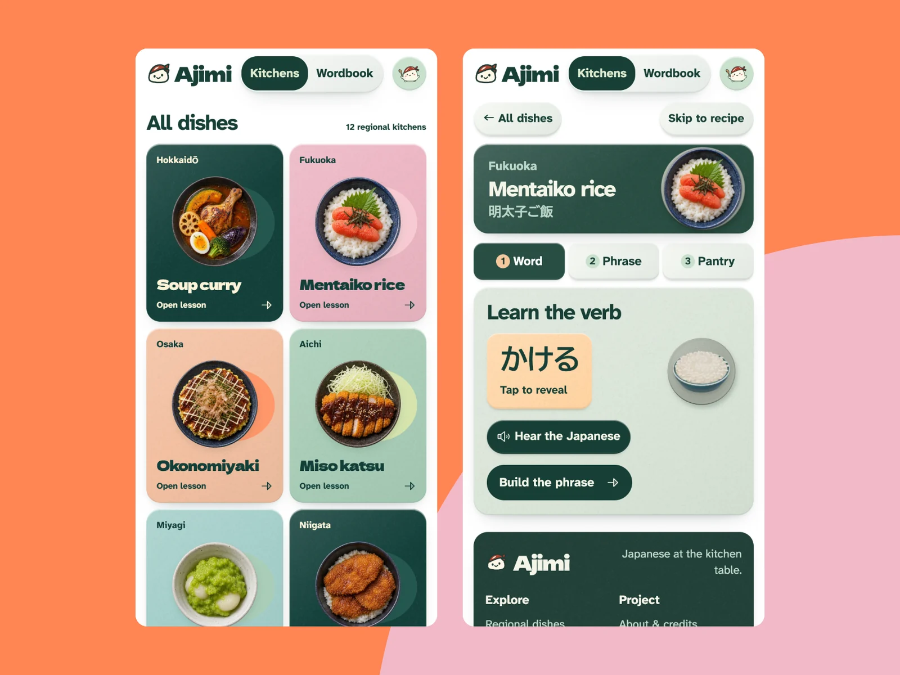
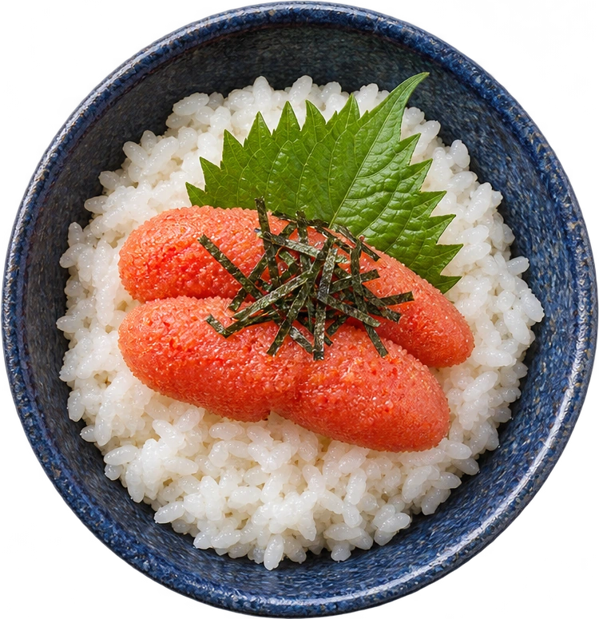

Sapporo

HakataFrom two dishes to twelve
Ajimi (味見) means tasting as you cook. Sapporo soup curry and Hakata mentaiko rice were the first two dishes. Swipe the table to pick from twelve.
Inside a lesson
From word to recipe
In Sapporo, tap 煮込む (nikomu) to hear how to say “simmer”. Save the verb, hear it in a phrase, then pick out the ingredients you’ll use at the stove.
Boil Sanuki udon
Yuderu (ゆでる) means “to boil”. Hold the pot as the water bubbles and the noodles move, then finish the bowl with two ladles of dashi and a pour of soy sauce.
Let Mochi taste it
One extra pour changes Mochi’s verdict. Hear the Japanese response, turn the 3D dish and check the dietary notes.